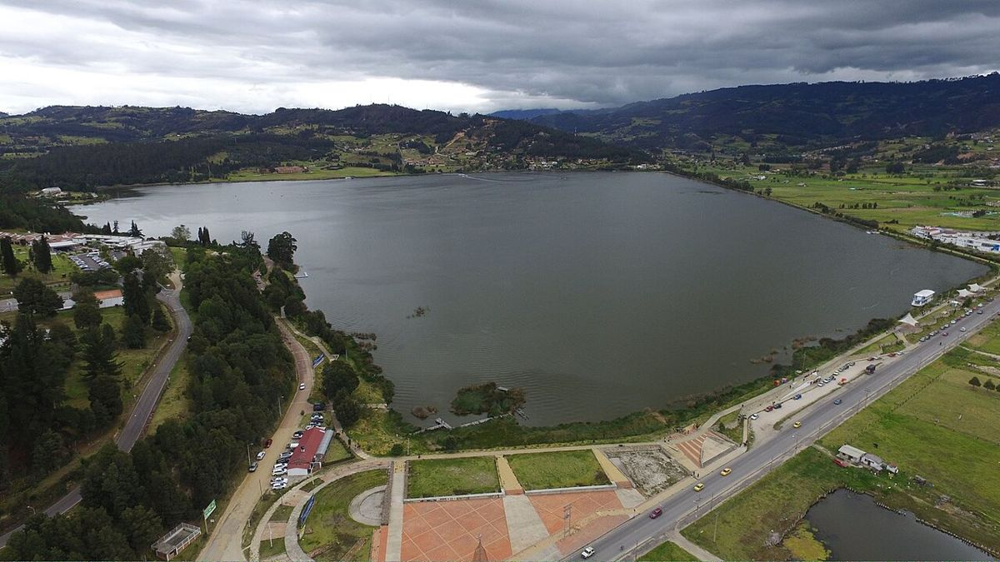
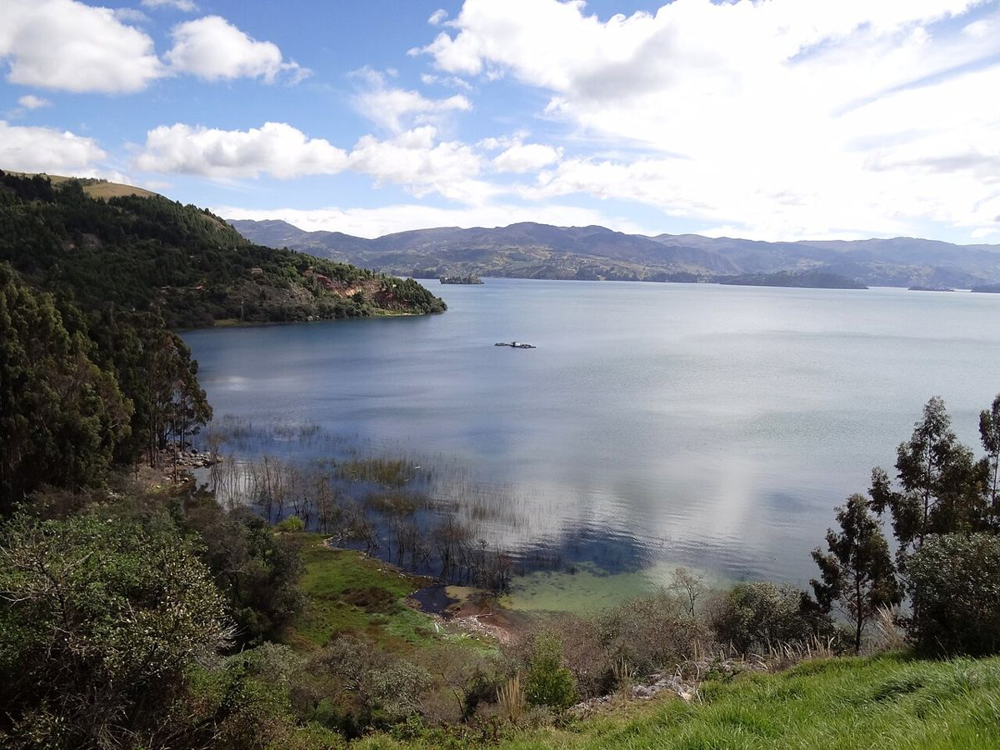
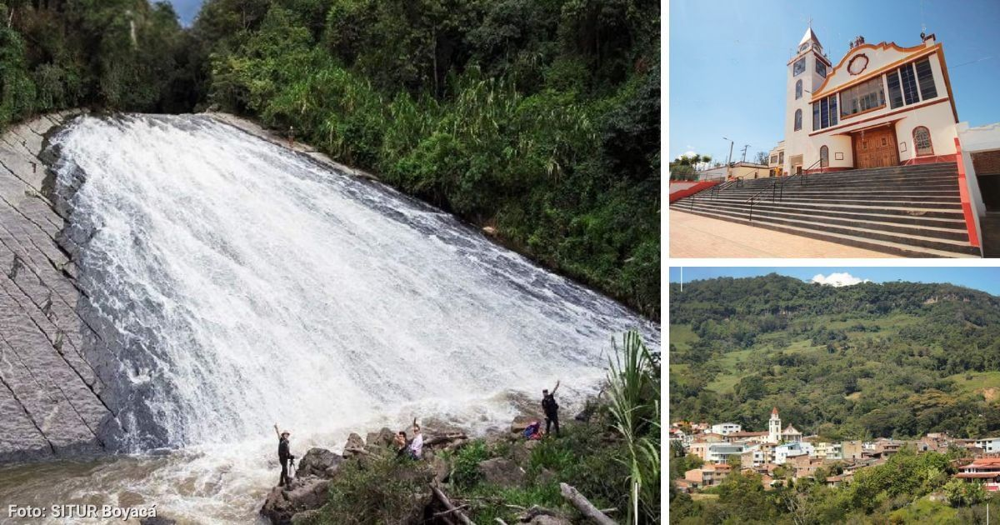
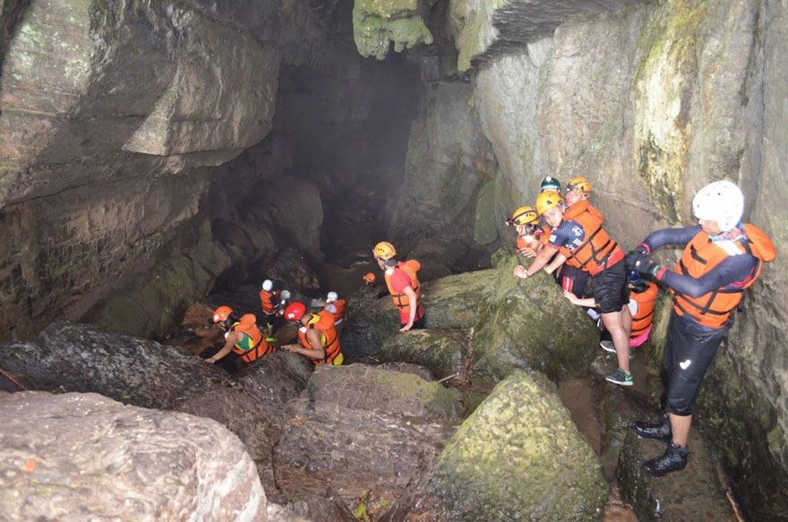
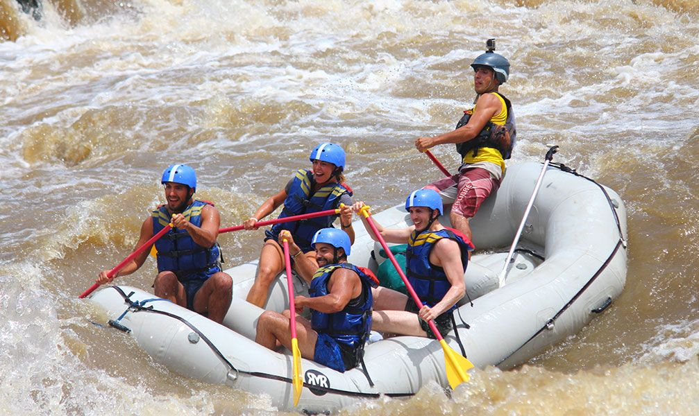
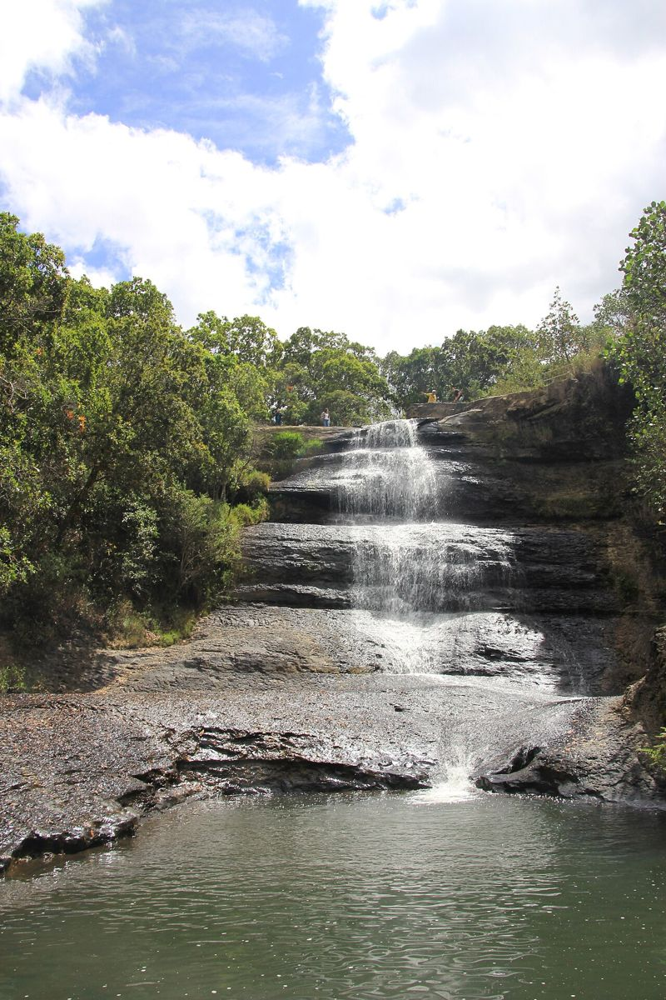
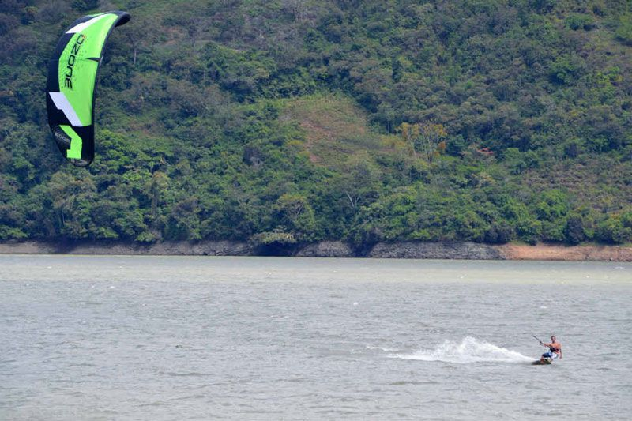
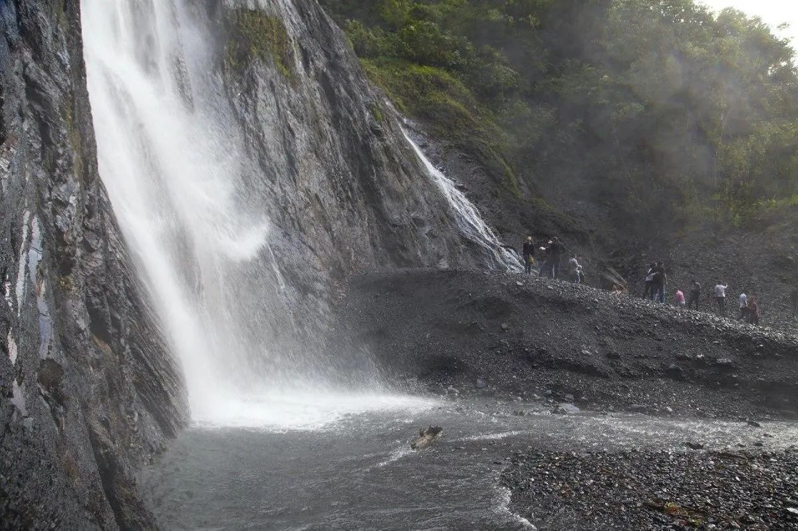
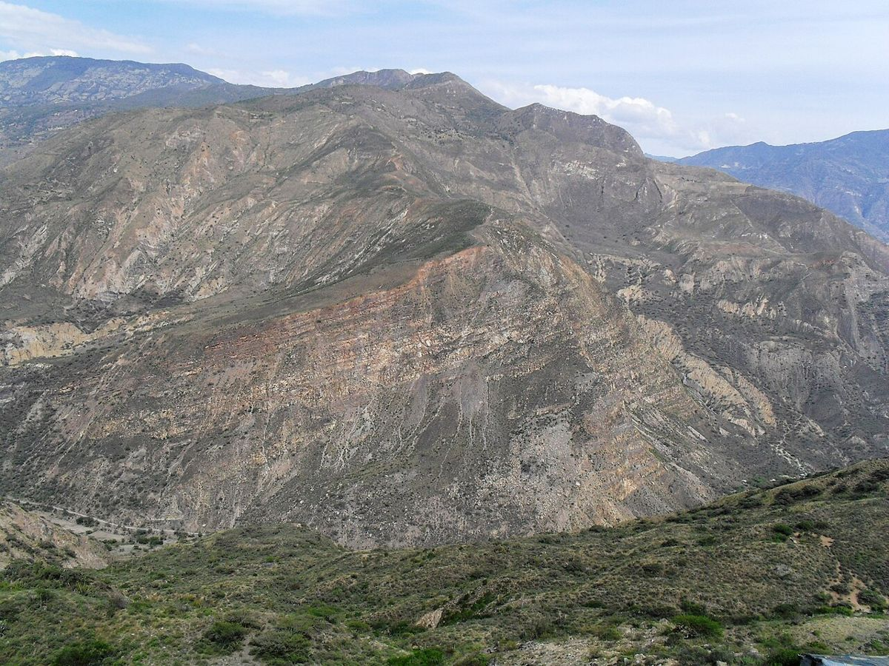

Lago Sochagota
Paipa
Kayak y botes recreativos
- Principiante
- Tundama
Actividades que se viven en ríos, lagos, cascadas y embalses de Boyacá.
10 lugares en 5 regiones
Si no sabes nadar o te da miedo el agua, quizás prefieras explorar otro elemento. En todas se usa chaleco salvavidas y se recomienda ir con guía.

Paipa
Kayak y botes recreativos

Aquitania – Tota – Cuítiva
Kayak, windsurf, vela, stand-up paddle y buceo de altitud

Chitaraque
Torrentismo, canyoning y descenso por cauces

Chitaraque
Canyoning, torrentismo y recorridos por agua y cavernas

Moniquirá
Rafting

Cerca de Villa de Leyva
Torrentismo / rápel en cascada (~15–18 m)

Macanal / Almeida
Kitesurf, kayak y paddleboard

Macanal
Torrentismo

San Luis de Gaceno
Rafting y canotaje

Límite Boyacá–Santander
Rafting y canotaje en expediciones de varios días
Cuéntanos qué lugar o actividad deberíamos agregar, o si algún dato está desactualizado.